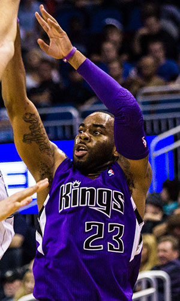

|  |
Матчи |
49 |
|
Передачи (всего/среднее) |
39 |
0.8 |
| В основе |
|
|
Подборы в защите (всего/среднее) |
67 |
1.4 |
| Время (всего/среднее) |
745:42 |
15:13 |
Подборы в атаке (всего/среднее) |
24 |
0.5 |
| Очки (всего/среднее) |
401 |
8.2 |
Подборы (всего/среднее) |
91 |
1.9 |
| 2-очковые броски (всего/среднее) |
89/208 |
1.8/4.2 |
Перехваты (всего/среднее) |
29 |
0.6 |
| 2-очковые броски (% реализации) |
42.8% |
|
Потери (всего/среднее) |
31 |
0.6 |
| 3-очковые броски (всего/среднее) |
57/150 |
1.2/3.1 |
Блокшоты (всего/среднее) |
7 |
0.1 |
| 3-очковые броски (% реализации) |
38% |
|
Блокшоты соперника (всего/среднее) |
26 |
0.5 |
| Штрафные броски (всего/среднее) |
52/63 |
1.1/1.3 |
Фолы (всего/среднее) |
41 |
0.8 |
| Маркус Торнтон |
Штрафные броски (% реализации) |
82.5% |
|
Коэффициент полезности (всего/среднее) |
246 |
5 |